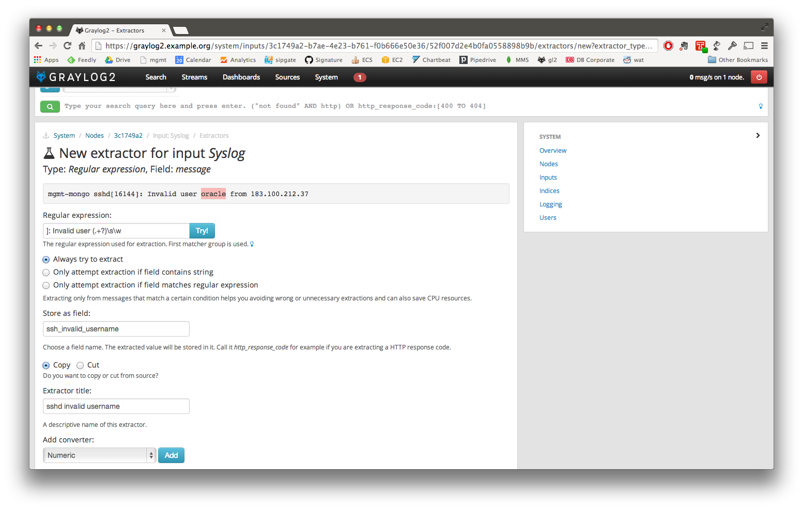
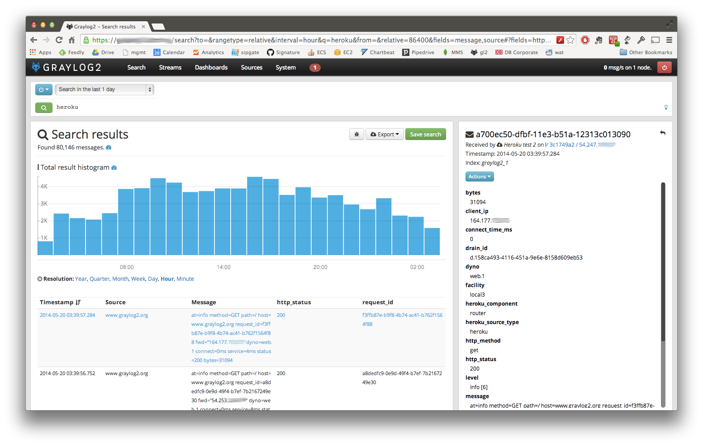
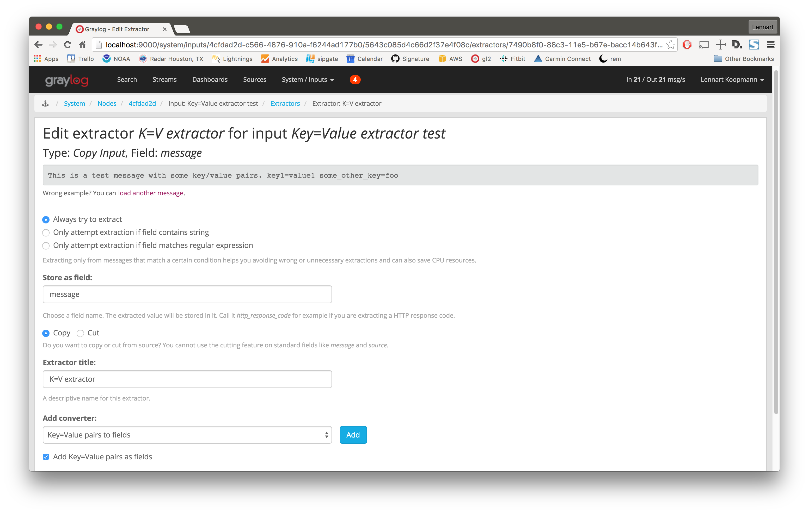
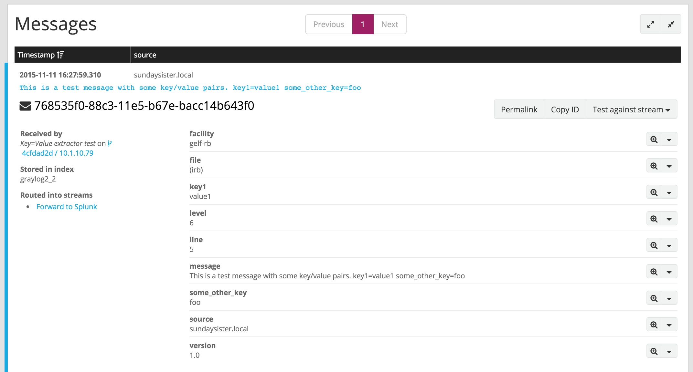
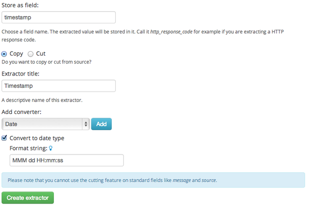
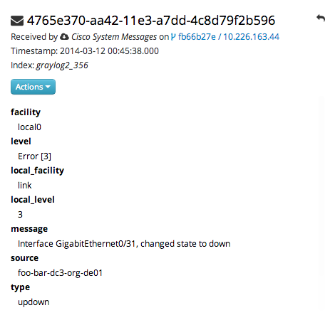

Extractors¶
The problem explained¶
Syslog (RFC3146, RFC5424) is the de facto standard logging protocol since the 1980s and was originally developed as part of the sendmail project. It comes with some annoying shortcomings that we tried to improve in GELF for application logging.
Because syslog has a clear specification in its RFCs it should be possible to parse it relatively easy. Unfortunately there are a lot of devices (especially routers and firewalls) out there that send logs looking like syslog but actually breaking several rules stated in the RFCs. We tried to write a parser that reads all of them as good as possible and failed. Such a loosely defined text message usually breaks the compatibility in the first date field already. Some devices leave out hostnames completely, some use localized time zone names (e. g. “MESZ” instead of “CEST”), and some just omit the current year in the timestamp field.
Then there are devices out there that at least do not claim to send syslog when they don’t but have another completely separate log format that needs to be parsed specifically.
We decided not to write custom message inputs and parsers for all those thousands of devices, formats, firmwares and configuration parameters out there but came up with the concept of Extractors introduced the v0.20.0 series of Graylog.
Graylog extractors explained¶
The extractors allow you to instruct Graylog nodes about how to extract data from any text in the received
message (no matter from which format or if an already extracted field) to message fields. You may already know why
structuring data into fields is important if you are using Graylog: There are a lot of analysis possibilities with
full text searches but the real power of log analytics unveils when you can run queries like
http_response_code:>=500 AND user_id:9001 to get all internal server errors that were triggered by a specific user.
Wouldn’t it be nice to be able to search for all blocked packages of a given source IP or to get a quickterms analysis of recently failed SSH login usernames? Hard to do when all you have is just a single long text message.
Creating extractors is possible via either Graylog REST API calls or from the web interface using a wizard. Select a message input on the System -> Inputs page and hit Manage extractors in the actions menu. The wizard allows you to load a message to test your extractor configuration against. You can extract data using for example regular expressions, Grok patterns, substrings, or even by splitting the message into tokens by separator characters. The wizard looks like this and should be pretty intuitive:
You can also choose to apply so called converters on the extracted value to for example convert a string consisting of numbers to an integer or double value (important for range searches later), anonymize IP addresses, lower-/uppercase a string, build a hash value, and much more.
Import extractors¶
The recommended way of importing extractors in Graylog is using Content packs. The Graylog Marketplace provides access to many content packs that you can easily download and import into your Graylog setup.
You can still import extractors from JSON if you want to. Just copy the JSON extractor export into the import dialog of a message input of the fitting type (every extractor set entry in the directory tells you what type of input to spawn, e. g. syslog, GELF, or Raw/plaintext) and you are good to go. The next messages coming in should already include the extracted fields with possibly converted values.
A message sent by Heroku and received by Graylog with the imported Heroku extractor set on a plaintext TCP input looks like this: (look at the extracted fields in the message detail view)
Using regular expressions to extract data¶
Extractors support matching field values using regular expressions. Graylog uses the Java Pattern class to evaluate regular expressions.
For the individual elements of regular expression syntax, please refer to Oracle’s documentation, however the syntax largely follows the familiar regular expression languages in widespread use today and will be familiar to most.
However, one key question that is often raised is matching a string in case insensitive manner. Java regular expressions are case sensitive by default. Certain flags, such as the one to ignore case sensitivity can either be set in the code, or as an inline flag in the regular expression.
For example, to create an extractor that matches the browser name in the following user agent string:
Mozilla/5.0 (Macintosh; Intel Mac OS X 10_9_1) AppleWebKit/537.36 (KHTML, like Gecko) Chrome/32.0.1700.107 Safari/537.36
the regular expression (applewebkit) will not match because it is case sensitive.
In order to match the expression using any combination of upper- and lowercase characters use the (?i) flag as such:
(?i)(applewebkit)
Most of the other flags supported by Java are rarely used in the context of matching stream rules or extractors, but if
you need them their use is documented on the same Javadoc page by Oracle. One common reason to use regular expression flags
in your regular expression is to make use of what is called non-capturing groups. Those are parentheses which only group
alternatives, but do not make Graylog extract the data they match and are indicated by (?:).
Using Grok patterns to extract data¶
Graylog also supports the extracting data using the popular Grok language to allow you to make use of your existing patterns.
Grok is a set of regular expressions that can be combined to more complex patterns, allowing to name different parts of the matched groups.
By using Grok patterns, you can extract multiple fields from a message field in a single extractor, which often simplifies specifying extractors.
Simple regular expressions are often sufficient to extract a single word or number from a log line, but if you know the entire structure of a line beforehand, for example for an access log, or the format of a firewall log, using Grok is advantageous.
For example a firewall log line could contain:
len=50824 src=172.17.22.108 sport=829 dst=192.168.70.66 dport=513
We can now create the following patterns on the System/Grok Patterns page in the web interface:
BASE10NUM (?<![0-9.+-])(?>[+-]?(?:(?:[0-9]+(?:\.[0-9]+)?)|(?:\.[0-9]+)))
NUMBER (?:%{BASE10NUM})
IPV6 ((([0-9A-Fa-f]{1,4}:){7}([0-9A-Fa-f]{1,4}|:))|(([0-9A-Fa-f]{1,4}:){6}(:[0-9A-Fa-f]{1,4}|((25[0-5]|2[0-4]\d|1\d\d|[1-9]?\d)(\.(25[0-5]|2[0-4]\d|1\d\d|[1-9]?\d)){3})|:))|(([0-9A-Fa-f]{1,4}:){5}(((:[0-9A-Fa-f]{1,4}){1,2})|:((25[0-5]|2[0-4]\d|1\d\d|[1-9]?\d)(\.(25[0-5]|2[0-4]\d|1\d\d|[1-9]?\d)){3})|:))|(([0-9A-Fa-f]{1,4}:){4}(((:[0-9A-Fa-f]{1,4}){1,3})|((:[0-9A-Fa-f]{1,4})?:((25[0-5]|2[0-4]\d|1\d\d|[1-9]?\d)(\.(25[0-5]|2[0-4]\d|1\d\d|[1-9]?\d)){3}))|:))|(([0-9A-Fa-f]{1,4}:){3}(((:[0-9A-Fa-f]{1,4}){1,4})|((:[0-9A-Fa-f]{1,4}){0,2}:((25[0-5]|2[0-4]\d|1\d\d|[1-9]?\d)(\.(25[0-5]|2[0-4]\d|1\d\d|[1-9]?\d)){3}))|:))|(([0-9A-Fa-f]{1,4}:){2}(((:[0-9A-Fa-f]{1,4}){1,5})|((:[0-9A-Fa-f]{1,4}){0,3}:((25[0-5]|2[0-4]\d|1\d\d|[1-9]?\d)(\.(25[0-5]|2[0-4]\d|1\d\d|[1-9]?\d)){3}))|:))|(([0-9A-Fa-f]{1,4}:){1}(((:[0-9A-Fa-f]{1,4}){1,6})|((:[0-9A-Fa-f]{1,4}){0,4}:((25[0-5]|2[0-4]\d|1\d\d|[1-9]?\d)(\.(25[0-5]|2[0-4]\d|1\d\d|[1-9]?\d)){3}))|:))|(:(((:[0-9A-Fa-f]{1,4}){1,7})|((:[0-9A-Fa-f]{1,4}){0,5}:((25[0-5]|2[0-4]\d|1\d\d|[1-9]?\d)(\.(25[0-5]|2[0-4]\d|1\d\d|[1-9]?\d)){3}))|:)))(%.+)?
IPV4 (?<![0-9])(?:(?:25[0-5]|2[0-4][0-9]|[0-1]?[0-9]{1,2})[.](?:25[0-5]|2[0-4][0-9]|[0-1]?[0-9]{1,2})[.](?:25[0-5]|2[0-4][0-9]|[0-1]?[0-9]{1,2})[.](?:25[0-5]|2[0-4][0-9]|[0-1]?[0-9]{1,2}))(?![0-9])
IP (?:%{IPV6}|%{IPV4})
DATA .*?
Then, in the extractor configuration, we can use these patterns to extract the relevant fields from the line:
len=%{NUMBER:length} src=%{IP:srcip} sport=%{NUMBER:srcport} dst=%{IP:dstip} dport=%{NUMBER:dstport}
This will add the relevant extracted fields to our log message, allowing Graylog to search on those individual fields, which can lead to more effective search queries by allowing to specifically look for packets that came from a specific source IP instead of also matching destination IPs if one would only search for the IP across all fields.
If the Grok pattern creates many fields, which can happen if you make use of heavily nested patterns, you can tell Graylog to skip
certain fields (and the output of their subpatterns) by naming a field with the special keyword UNWANTED.
Let’s say you want to parse a line like:
type:44 bytes:34 errors:122
but you are only interested in the second number bytes. You could use a pattern like:
type:%{BASE10NUM:type} bytes:%{BASE10NUM:bytes} errors:%{BASE10NUM:errors}
However, this would create three fields named type, bytes, and errors. Even not naming the first and last patterns would
still create a field names BASE10NUM. In order to ignore fields, but still require matching them use UNWANTED:
type:%{BASE10NUM:UNWANTED} bytes:%{BASE10NUM:bytes} errors:%{BASE10NUM:UNWANTED}
This now creates only a single field called bytes while making sure the entire pattern must match.
If you already know the data type of the extracted fields, you can make use of the type conversion feature built into the Graylog Grok library. Going back to the earlier example:
len=50824 src=172.17.22.108 sport=829 dst=192.168.70.66 dport=513
We know that the content of the field len is an integer and would like to make sure it is stored with that data type, so we can
later create field graphs with it or access the field’s statistical values, like average etc.
Grok directly supports converting field values by adding ;datatype at the end of the pattern, like:
len=%{NUMBER:length;int} src=%{IP:srcip} sport=%{NUMBER:srcport} dst=%{IP:dstip} dport=%{NUMBER:dstport}
The currently supported data types, and their corresponding ranges and values, are:
| Type | Range | Example |
|---|---|---|
| byte | -128 ... 127 | %{NUMBER:fieldname;byte} |
| short | -32768 ... 32767 | %{NUMBER:fieldname;short} |
| int | -2^31 ... 2^31 -1 | %{NUMBER:fieldname;int} |
| long | -2^63 ... 2^63 -1 | %{NUMBER:fieldname;long} |
| float | 32-bit IEEE 754 | %{NUMBER:fieldname;float} |
| double | 64-bit IEEE 754 | %{NUMBER:fieldname;double} |
| boolean | true, false | %{DATA:fieldname;boolean} |
| string | Any UTF-8 string | %{DATA:fieldname;string} |
| date | See SimpleDateFormat | %{DATA:timestamp;date;dd/MMM/yyyy:HH:mm:ss Z} |
| datetime | Alias for date |
There are many resources are the web with useful patterns, and one very helpful tool is the Grok Debugger, which allows you to test your patterns while you develop them.
Graylog uses Java Grok to parse and run Grok patterns.
Using the JSON extractor¶
Since version 1.2, Graylog also supports extracting data from messages sent in JSON format.
Using the JSON extractor is easy: once a Graylog input receives messages in JSON format, you can create an extractor by going to System -> Inputs and clicking on the Manage extractors button for that input. Next, you need to load a message to extract data from, and select the field containing the JSON document. The following page let you add some extra information to tell Graylog how it should extract the information. Let’s illustrate how a message would be extracted with an example message:
{"level": "ERROR", "details": {"message": "This is an example error message", "controller": "IndexController", "tags": ["one", "two", "three"]}}
Using the default settings, that message would be extracted into these fields:
- details.tags
- one, two, three
- level
- ERROR
- details.controller
- IndexController
- details.message
- This is an example error message
In the create extractor page, you can also customize how to separate list of elements, keys, and key/values. It is also possible to flatten JSON structures or expand them into multiple fields, as shown in the example above.
Automatically extract all key=value pairs¶
Sometimes you will receive messages like this:
This is a test message with some key/value pairs. key1=value1 some_other_key=foo
You might want to extract all key=value pairs into Graylog message fields without having to specify all possible key names or
even their order. This is how you can easily do this:
Create a new extractor of type “Copy Input” and select to read from the field message. (Or any other string field that contains
key=value pairs.) Configure the extractor to store the (copied) field value to the same field. In this case message. The
trick is to add the “Key=Value pairs to fields” converter as last step. Because we use the “Copy Input” extractor, the converter
will run over the complete field you selected and convert all key=value pairs it can find.
This is a screenshot of the complete extractor configuration:
... and this is the resulting message:
Normalization¶
Many log formats are similar to each other, but not quite the same. In particular they often only differ in the names attached to pieces of information.
For example, consider different hardware firewall vendors, whose models log the destination IP in different fields of the message,
some use dstip, some dst and yet others use destination-address:
2004-10-13 10:37:17 PDT Packet Length=50824, Source address=172.17.22.108, Source port=829, Destination address=192.168.70.66, Destination port=513
2004-10-13 10:37:17 PDT len=50824 src=172.17.22.108 sport=829 dst=192.168.70.66 dport=513
2004-10-13 10:37:17 PDT length="50824" srcip="172.17.22.108" srcport="829" dstip="192.168.70.66" dstport="513"
You can use one or more non-capturing groups to specify the alternatives of the field names, but still be able to extract the a parentheses group in the regular expression. Remember that Graylog will extract data from the first matched group of the regular expression. An example of a regular expression matching the destination IP field of all those log messages from above is:
(?:dst|dstip|[dD]estination\saddress)="?(\d{1,3}\.\d{1,3}\.\d{1,3}\.\d{1,3})"?
This will only extract the IP address without caring about which of the three naming schemes was used in the original log message. This way you don’t have to set up three different extractors.
The standard date converter¶
Date parser converters for extractors allow you to convert extracted data into timestamps - Usually used to set the timestamp of a message based on some date it contains. Let’s assume we have this message from a network device:
<131>: foo-bar-dc3-org-de01: Mar 12 00:45:38: %LINK-3-UPDOWN: Interface GigabitEthernet0/31, changed state to down
Extracting most of the data is not a problem and can be done easily. Using the date in the message (Mar 12 00:45:38) as Graylog message timestamp however needs to be done with a date parser converter.
Use a standard extractor rule to select the timestamp and apply the Date converter with a format string:
MMM dd HH:mm:ss
(format string table at the end of this page)
 Standard date converter format string table¶
| Symbol | Meaning | Presentation | Examples |
|---|---|---|---|
| G | era | text | AD |
| C | century of era (>=0) | number | 20 |
| Y | year of era (>=0) | year | 1996 |
| x | weekyear | year | 1996 |
| w | week of weekyear | number | 27 |
| e | day of week | number | 2 |
| E | day of week | text | Tuesday; Tue |
| y | year | year | 1996 |
| D | day of year | number | 189 |
| M | month of year | month | July; Jul; 07 |
| d | day of month | number | 10 |
| a | halfday of day | text | PM |
| K | hour of halfday (0~11) | number | 0 |
| h | clockhour of halfday (1~12) | number | 12 |
| H | hour of day (0~23) | number | 0 |
| k | clockhour of day (1~24) | number | 24 |
| m | minute of hour | number | 30 |
| s | second of minute | number | 55 |
| S | fraction of second | millis | 978 |
| z | time zone | text | Pacific Standard Time; PST |
| Z | time zone offset/id | zone | -0800; -08:00; America/Los_Angeles |
| ‘ | escape for text | delimiter | |
| ‘’ | single quote | literal | ‘ |
The flexible date converter¶
Now imagine you had one of those devices that send messages that are not so easy to parse because they do not follow a strict
timestamp format. Some network devices for example like to send days of the month without adding a padding 0 for the first 9 days.
You’ll have dates like Mar 9 and Mar 10 and end up having problems defining a parser string for that. Or maybe you have
something else that is really exotic like just last wednesday as timestamp. The flexible date converter is accepting any
text data and tries to build a date from that as good as it can.
Examples:
- Mar 12, converted at 12:27:00 UTC in the year 2014: 2014-03-12T12:27:00.000
- 2014-3-12 12:27: 2014-03-12T12:27:00.000
- Mar 12 2pm: 2014-03-12T14:00:00.000
Note that the flexible date converter is using UTC as time zone by default unless you have time zone information in the parsed text or have configured another time zone when adding the flexible date converter to an extractor (see this comprehensive list of time zones available for the flexible date converter).